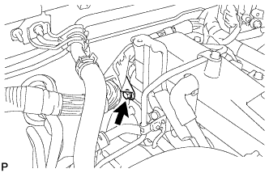
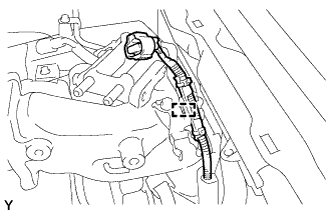
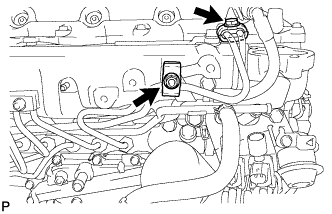

НАГНЕТАЮЩИЙ ТОПЛИВНЫЙ НАСОС (для моделей с DPF) > СНЯТИЕ |
| 1. ОТСОЕДИНИТЕ ПРОВОД ОТ ОТРИЦАТЕЛЬНОГО ВЫВОДА АККУМУЛЯТОРНОЙ БАТАРЕИ |
| 2. СНИМИТЕ УЗЕЛ ВЕНТИЛЯЦИОННОЙ РЕШЕТКИ В ВЕРХНЕЙ ЧАСТИ КОЖУХА |
| 3. СНИМИТЕ ПРИВОДНОЙ РЕМЕНЬ ГАЗОРАСПРЕДЕЛЕНИЯ |
| 4. СНИМИТЕ ЭЛЕКТРИЧЕСКИЙ КЛАПАН УПРАВЛЕНИЯ РОГ В СБОРЕ |
| 5. ОТСОЕДИНИТЕ ЖГУТ ПРОВОДОВ |
 |
Выверните болт и отсоедините жгут проводов.
|  |
Для моделей с левосторонним рулевым управлением:
Выверните болт и отсоедините жгут проводов.
Освободите 5 зажимов и отсоедините жгут проводов от верхней панели кожуха.
| 6. СНИМИТЕ ДАТЧИК АБСОЛЮТНОГО ДАВЛЕНИЯ В КОЛЛЕКТОРЕ |
 |
Отсоедините разъем датчика абсолютного давления в коллекторе и вакуумный шланг.
Выверните болт и снимите датчик абсолютного давления в коллекторе.
| 7. СНИМИТЕ КРОНШТЕЙН КЛАПАНА СИСТЕМЫ СНИЖЕНИЯ ТОКСИЧНОСТИ ОТРАБОТАВШИХ ГАЗОВ |
 |
Выверните болт и снимите кронштейн клапана системы снижения токсичности отработавших газов.
| 8. СНИМИТЕ КРОНШТЕЙН КОРПУСА ДРОССЕЛЬНОЙ ЗАСЛОНКИ |
 |
Выверните 3 болта и снимите кронштейн корпуса дроссельной заслонки.
| 9. СНИМИТЕ ГАЗОВЫЙ ФИЛЬТР № 1 |
 |
Отсоедините вакуумный шланг и снимите газовый фильтр № 1 с кронштейна газового фильтра.
| 10. СНИМИТЕ КРОНШТЕЙН ГАЗОВОГО ФИЛЬТРА |
|  |
Освободите зажим, чтобы отсоединить жгут проводов.
 |
Выверните болт и снимите кронштейн газового фильтра.
| 11. СНИМИТЕ ПАТРУБОК ПОДАЧИ ВОЗДУХА |
 |
Выверните 3 болта и снимите патрубок подачи воздуха и прокладку.
| 12. СНИМИТЕ ТОПЛИВНУЮ ТРУБКУ ВЫСОКОГО ДАВЛЕНИЯ № 4 |
|  |
Выверните болт, отверните гайку и снимите 2 зажима топливной трубки высокого давления № 2.
 |
С помощью разрезной головки на 17 мм ослабьте гайки штуцеров и снимите топливную трубку высокого давления № 4.
| *a | Со стороны топливной системы Common Rail |
| *b | Со стороны форсунки |
| 13. СНИМИТЕ ТОПЛИВОПРОВОД № 2 |
Отсоедините разъем топливопровода (Нажмите здесь).
 | Разъем топливопровода |
 | Пустотелый соединительный болт-штуцер |
 | Топливный обратный клапан |
С помощью шестигранного ключа на 6 мм выверните пустотелый соединительный болт-штуцер и снимите прокладку.
Снимите обратный топливный клапан, прокладку и топливопровод № 2.
| 14. СНИМИТЕ ИЗОЛЯТОР ТОПЛИВНОГО НАСОСА ВЫСОКОГО ДАВЛЕНИЯ |
 |
| 15. СНИМИТЕ ЭЛЕМЕНТ ЗАЩИТЫ ТОПЛИВНОГО НАСОСА ВЫСОКОГО ДАВЛЕНИЯ № 1 |
 |
Выверните 2 болта и снимите элемент защиты топливного насоса высокого давления № 1.
| 16. СНИМИТЕ ТОПЛИВНЫЙ НАСОС В СБОРЕ |
Отсоедините 2 шланга подачи топлива.
Отсоедините разъем клапана регулирования всасывания и разъем датчика температуры топлива от нагнетающего топливного насоса.
 |
Выверните 4 болта, указанные стрелками на рисунке.
Снимите фланец зубчатого колеса распредвала № 2 и шкив приводного вала насоса.
 |
Отверните установочную гайку и снимите кольцевое уплотнение, удерживая шкив коленчатого вала с помощью SST.
Ослабьте 2 гайки.
 |
Отсоедините нагнетающий топливный насос от шестерни насоса высокого давления с помощью SST.
Отверните 2 гайки и снимите нагнетающий топливный насос.
Снимите кольцевое уплотнение.